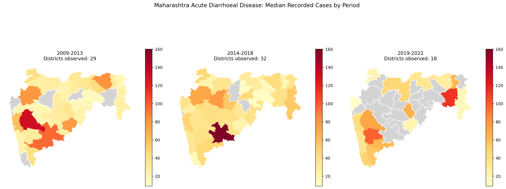
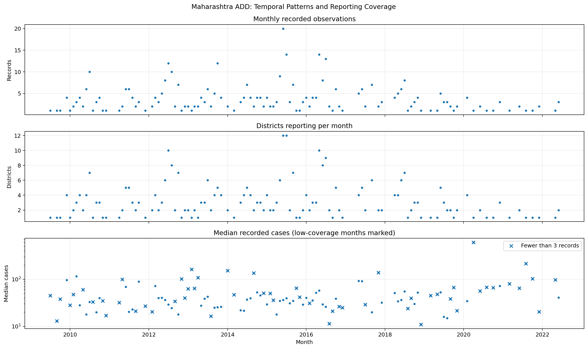
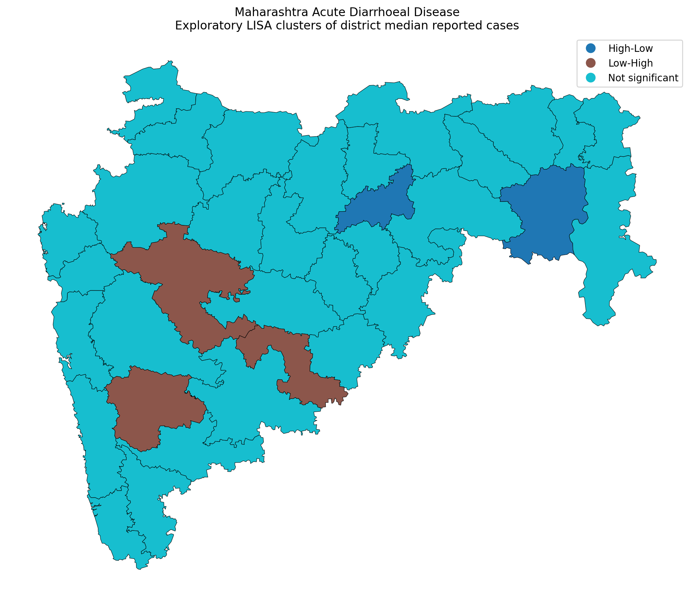
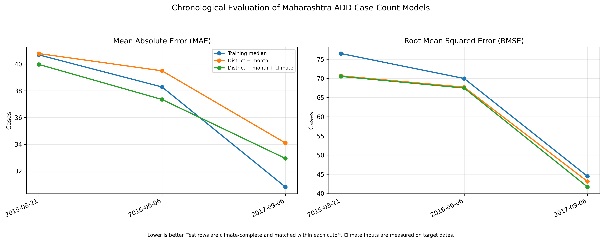

Project: Spatial Analytics Engine for Disease Outbreaks
Research focus: Spatial epidemiology, temporal analysis, and exploratory forecasting
Study area: Maharashtra, India, with selected analyses of other Indian states
Dataset period: 2009–2022
Supervisor: Prof. Pabitra Mitra, IIT Kharagpur
This project develops a geographic information system (GIS) for visualizing disease outbreak locations, analyzing spatial footprints, and exploring spatio-temporal forecasting methods. The application combines an interactive web interface, geospatial processing, a Python data-engineering pipeline, and a FastAPI prediction service.
The research component investigates recorded Acute Diarrhoeal Disease (ADD) cases in Maharashtra using district-level spatial summaries, temporal visualizations, spatial autocorrelation analysis, period-wise comparisons, and exploratory case-count prediction experiments.
The prepared Maharashtra ADD analysis contains 445 records. Reporting coverage varies substantially across the study period, with 178 records in 2009–2013, 225 in 2014–2018, and 42 in 2019–2022. Among 15 districts meeting the minimum observation requirement in both of the first two periods, eight showed an increase and seven showed a decrease in median recorded cases. Neither the Wilcoxon signed-rank test nor the sign test identified a statistically significant directional shift. Global Moran's I analysis also did not identify statistically significant spatial autocorrelation in district-level median cases.
Exploratory forecasting experiments compared a training-median baseline, district-and-month features, and district, month, and climate features across three chronological cutoffs. Climate features consistently reduced RMSE relative to the district-and-month model, but the models did not consistently outperform the median baseline on mean absolute error. Since climate measurements were taken from the target dates, these experiments should be interpreted as retrospective case-count prediction, not validated operational forecasting.
The project demonstrates an integrated GIS and analytical workflow while highlighting the importance of reporting coverage, evaluation design, and careful interpretation of sparse epidemiological data.
Keywords: GIS, spatial epidemiology, outbreak mapping, spatio-temporal analysis, Moran's I, Random Forest, climate features, disease surveillance.
Disease surveillance data can help researchers understand where cases are recorded, how reported counts vary over time, and whether spatial patterns warrant further investigation. However, surveillance records are often irregular, incomplete, and affected by changes in reporting practices. Analytical systems must therefore communicate both observed patterns and uncertainty.
This project combines an interactive GIS application with an analytical workflow for investigating recorded outbreak data. The engineering component supports geographic visualization and exploratory prediction, while the research component examines whether the available records support meaningful spatial, temporal, and predictive conclusions.
A useful outbreak-analysis system must do more than display case locations. It should support spatial footprint estimation, temporal exploration, structured data processing, and evaluation of predictive methods against simple baselines.
At the same time, sparse and irregular surveillance data create important limitations. An apparent increase in recorded cases may reflect changing reporting coverage rather than a genuine increase in disease incidence. Similarly, a model that fits historical observations does not necessarily predict future outbreak expansion accurately.
The frontend uses HTML, JavaScript, Leaflet.js, and OpenStreetMap tiles to display geographic locations and outbreak boundaries.
The principal capabilities include:
The convex hull represents the smallest convex polygon enclosing the provided points. It is a geometric footprint, not a probability distribution or a validated estimate of the actual area affected by disease transmission.
The Python data-engineering workflow processes coordinate-based observations into daily features, including case counts, centroids, and geographic spread summaries.
Great-circle distances can be calculated using the Haversine formula to estimate distances between geographic coordinates. These features provide inputs for exploratory spatial and temporal analysis.
The interpretation of daily aggregates depends on the meaning and timing of the input records. Synthetic or manually entered points must not be treated as observed epidemiological surveillance data.
The prediction service is implemented using FastAPI and exposes a prediction endpoint for frontend requests.
The implemented forecasting components include:
The SIR model uses susceptible, infected, and recovered compartments and differential equations to represent a simplified transmission process. Its parameters and outputs depend on the validity of the input time series, initial conditions, and population assumptions.
The current spatial projection is a heuristic combination of trend extrapolation and the fitted SIR component. It should not be described as a validated estimate of future geographic spread without independent spatial forecast evaluation.
The frontend is deployed on Vercel and the FastAPI backend is hosted on Render. This separates the interactive user interface from the prediction service.
Live demo: https://outbreak-spatial-mapper.vercel.app/
Repository: https://github.com/Vya234/outbreak-spatial-mapper
The research uses an EpiClim dataset supplied for the project. The dataset contains disease records spanning 2009–2022 and includes fields for disease, cases, deaths, reporting week, date components, state, district, coordinates, and environmental variables.
The original fields include:
preci).LAI).Temp).Unnamed: 0.The Maharashtra ADD spatial-temporal analysis uses 445 prepared records. Other analyses use different disease and state subsets; their sample sizes must be reported separately.
The broader dataset contains 8,985 rows. The initial audit identified the following missing-value proportions:
| Variable | Missing |
|---|---|
| Deaths | 71.6% |
| Precipitation | 1.5% |
| Leaf Area Index | 24.4% |
| Temperature | 10.4% |
An exact-duplicate audit identified 10 duplicate groups involving 20 rows
when the index-like Unnamed: 0 field was excluded from comparison. These
groups included eight Acute Diarrhoeal Disease groups, one Dengue group, and
one Malaria group.
Potential duplicate records require source-level interpretation. Repeated entries may reflect duplicated ingestion, repeated bulletins, or separate reports. Therefore, the audit does not automatically justify deleting records from the source dataset.
The stored outbreak-week field matched the ISO calendar week for 3,631 of 8,985 records (40.4%). This discrepancy does not establish that the stored week is incorrect: it may represent a reporting or bulletin week. The field should not be overwritten without a documented definition.
The Maharashtra ADD observations are irregularly sampled. Dates do not represent a complete daily or weekly series, and districts have different numbers of observations.
Consequently:
A subset of records was checked against manually inspected NCDC/IDSP weekly
bulletin text. The validation file contains 13 selected records marked
MATCH.
This establishes agreement for those checked entries only. It does not establish that every row in the complete dataset is correct or that the dataset is free from duplication.
The analysis uses 445 prepared Maharashtra ADD records grouped into three periods:
| Period | Districts observed | Records |
|---|---|---|
| 2009–2013 | 29 | 178 |
| 2014–2018 | 32 | 225 |
| 2019–2022 | 18 | 42 |
District medians were calculated from available observations. Districts without observations in a period were left unreported rather than assigned zero.
The district labels Sholapur and Solapur were normalized for spatial comparison. The raw source labels should remain preserved in the original data.
A district was included in a pairwise comparison only if it had at least five observations in both periods. This practical threshold reduces comparisons based on extremely small samples but does not guarantee statistical reliability.
Fifteen districts met this criterion for 2009–2013 versus 2014–2018:
Examples of observed changes include:
| District | Earlier median | Later median | Change |
|---|---|---|---|
| Gadchiroli | 25 | 54 | +29 |
| Nanded | 21.5 | 39 | +17.5 |
| Sangli | 95 | 47 | -48 |
| Pune | 131 | 36 | -95 |
The mean change was influenced by large decreases in some districts. These statistics describe recorded counts, not population-adjusted incidence.
For the 15 districts comparable across 2009–2013 and 2014–2018:
| Test | Statistic | p-value |
|---|---|---|
| Wilcoxon signed-rank test | 51.5 | 0.629 |
| Two-sided sign test | — | 1.000 |
Neither test provided evidence of a consistent directional shift at the conventional 5% significance level.
This does not prove that disease incidence remained stable. The comparison is exploratory and is affected by sparse observations, changing reporting coverage, and the practical inclusion threshold.
Only Kolhapur met the minimum observation requirement in both 2014–2018 and 2019–2022. Therefore, a meaningful statewide comparison involving the final period was not possible under this criterion.
The monthly timeline covers July 2009 to June 2022 and reindexes the data to a complete calendar of 156 months.
The April 2020 value must not be interpreted as a statewide outbreak peak. The monthly visualization presents reporting counts, districts reporting, and median recorded cases. Months with limited reporting are explicitly identified, and missing months are retained as missing rather than set to zero.
The case-summary panel uses a logarithmic vertical axis. Its values should therefore be interpreted on a log scale.
The timeline describes the available records; it does not establish continuous disease incidence, a causal trend, or reliable seasonality.
Global Moran's I was used to assess whether district-level case summaries exhibited spatial autocorrelation under the selected district-neighbour definition. Local Indicators of Spatial Association (LISA) were also used to explore local spatial patterns.
The analysis normalized Sholapur to Solapur to align the data with the district boundary layer. The matched spatial analysis contained 34 districts.
| District summary | Moran's I | Permutation p-value |
|---|---|---|
| Median cases | -0.0050 | 0.3551 |
| Mean cases | 0.1048 | 0.1226 |
| Maximum cases | 0.0018 | 0.3585 |
None of the three global statistics was significant at the 5% level.
A robustness analysis varying the minimum number of observations per district also produced non-significant global Moran's I results. The number of included districts decreased as the threshold increased, reducing the coverage of the analysis.
The median-case LISA classification contained 29 districts labelled not significant, three Low-High districts, and two High-Low districts.
These local classifications are exploratory and should be interpreted alongside the global results, sample sizes, spatial weights, and multiple testing considerations. They do not independently establish disease transmission between neighbouring districts.
The current analysis did not detect statistically significant global spatial autocorrelation in the selected district-level summaries.
This is not evidence that geographic factors are irrelevant. District summaries, sparse observations, reporting differences, and the chosen spatial-neighbour definition can all influence the results.
The predictive experiments investigate whether district identity, calendar month, and climate variables help predict recorded case counts compared with a simple baseline.
These experiments are separate from the frontend's heuristic prediction of geographic expansion. Good performance on case-count prediction would not, by itself, validate a forecast of future outbreak boundaries.
Three models were compared:
The Random Forest experiments used 300 trees, a minimum leaf size of five, and a fixed random seed. District identity was one-hot encoded. Climate experiments used rows with complete climate measurements.
The fair model comparison used chronological cutoffs and matched climate-complete test rows for all three models at each cutoff.
| Cutoff | Model | Training rows | Test rows | MAE | RMSE |
|---|---|---|---|---|---|
| 2015-08-21 | Training median | 172 | 108 | 40.681 | 76.476 |
| 2015-08-21 | District + month | 172 | 108 | 40.780 | 70.657 |
| 2015-08-21 | District + month + climate | 172 | 108 | 39.967 | 70.515 |
| 2016-06-06 | Training median | 200 | 80 | 38.281 | 69.964 |
| 2016-06-06 | District + month | 200 | 80 | 39.489 | 67.696 |
| 2016-06-06 | District + month + climate | 200 | 80 | 37.346 | 67.472 |
| 2017-09-06 | Training median | 230 | 50 | 30.810 | 44.437 |
| 2017-09-06 | District + month | 230 | 50 | 34.099 | 43.102 |
| 2017-09-06 | District + month + climate | 230 | 50 | 32.943 | 41.663 |
MAE is mean absolute error; RMSE is root mean squared error. Lower values indicate better performance.
Across all three cutoffs, adding climate features reduced RMSE relative to the district-and-month model. The climate model also reduced MAE relative to that model at each cutoff.
Relative to the training-median baseline, the climate model achieved:
| Cutoff | MAE improvement | RMSE improvement |
|---|---|---|
| 2015-08-21 | 1.75% | 7.80% |
| 2016-06-06 | 2.44% | 3.56% |
| 2017-09-06 | -6.92% | 6.24% |
Positive improvement means lower error than the baseline; negative improvement means worse performance.
Thus, the climate model consistently improved RMSE over the median baseline in these experiments but did not consistently improve MAE. The findings suggest that climate variables may help reduce larger prediction errors, but the evidence does not establish a uniformly superior predictive model.
The test windows overlap across cutoffs, so these results should not be treated as three independent replications.
The climate variables were measured on the same dates as the target case counts. Consequently, the experiment is a retrospective prediction exercise using contemporaneous climate data. In a genuine future forecast, these inputs would need to be available at prediction time, for example through lagged climate observations or weather forecasts.
The evaluation predicts recorded case counts at observed dates. It does not validate future geographic spread, the SIR-derived radius multiplier, or the accuracy of the frontend's predicted expansion boundary.
The project integrates geospatial software engineering with exploratory epidemiological analysis. Its primary strengths are the interactive spatial interface, modular backend, reproducible analytical scripts, explicit reporting-coverage analysis, and comparison of predictive models against a simple baseline.
The research results also demonstrate why data limitations must be part of the analysis rather than an afterthought.
First, uneven reporting makes it difficult to interpret changes in recorded cases as changes in disease incidence. Second, global spatial autocorrelation was not statistically significant for the selected district summaries. Third, climate features improved RMSE consistently across the tested chronological cutoffs, but the models did not consistently outperform the median baseline on MAE.
These findings are not failures of the project. They identify which conclusions are supported by the available data and where stronger validation is needed.
This project presents an integrated GIS application and an exploratory research workflow for disease-outbreak analysis. It combines interactive geographic visualization, convex-hull-based spatial footprints, data processing, a prediction API, district-level spatio-temporal analysis, spatial autocorrelation tests, and chronological case-count model comparisons.
The Maharashtra ADD analysis did not detect a statistically significant directional shift between the first two comparison periods or significant global spatial autocorrelation in the selected district summaries. Reporting coverage was too uneven to support a meaningful statewide comparison involving 2019–2022 under the chosen observation threshold.
In predictive experiments, climate features consistently reduced RMSE relative to a district-and-month Random Forest model. However, performance relative to the training-median baseline was mixed across MAE and RMSE. Because the climate features were contemporaneous with the target dates, the results remain retrospective rather than a validated operational forecast.
The central contribution is an integrated and reproducible analytical workflow that makes spatial patterns and reporting limitations visible while establishing a clear foundation for more rigorous spatio-temporal forecasting research.
Key analysis outputs include:
research_outputs/mh_add_spatiotemporal_findings.mdresearch_outputs/mh_add_spatiotemporal_maps.pngresearch_outputs/mh_add_spatiotemporal_summary.csvresearch_outputs/mh_add_period_change_uncertainty.csvresearch_outputs/mh_add_reporting_aware_timeline.pngresearch_outputs/mh_add_reporting_aware_monthly.csvresearch_outputs/mh_add_moran_summary_robustness.csvresearch_outputs/mh_add_fair_model_comparison.csvresearch_outputs/rolling_origin_mh_add_fair_results.csvresearch_outputs/idsp_validation.csvExact commands, software versions, dependency versions, and dataset definitions should be recorded before final submission. All reported numbers should be regenerated from the final scripts and checked against the saved outputs.

Figure 1. District-level median recorded ADD cases across three study periods. Districts without observations are not assigned zero. Differences should be interpreted in light of unequal reporting coverage.

Figure 2. Monthly recorded observations, reporting districts, and median recorded cases. Sparse months are flagged; missing months are not treated as zero incidence.

Figure 3. Local spatial association classifications for district-level median cases. Global Moran's I was not statistically significant (I = -0.0050, permutation p = 0.3551).

Figure 4. MAE and RMSE across three chronological cutoffs. Lower values indicate lower error. Climate measurements are contemporaneous with target dates, so the evaluation does not establish future operational forecasting performance.